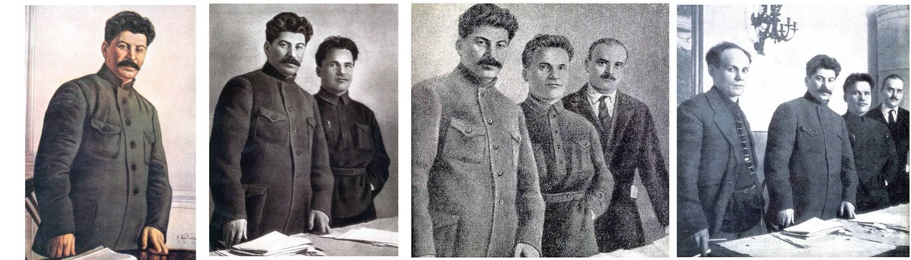

Deep fakes. Addictive technology. Data breaches. New technology and its (mis)use in the past decade seems to have resulted in a crisis of trust in institutions, and in truth itself.

Figure 1: Nikolai Antipow, Sergej Kirow and Nikolai Schwernik edited, over time, from the record for propaganda purposes. From Wiki
National archives are not immune to a climate of distrust in institutions. The National Archives of UK alone holds over 120 miles of papers and documents, from the Domesday book to recent UK government cabinet meeting minutes.
ARCHANGEL is a project formed with members from the University of Surrey (Centre for Vision, Speech and Signal Processing), the UK’s National Archives, and the Open Data Institute (ODI).